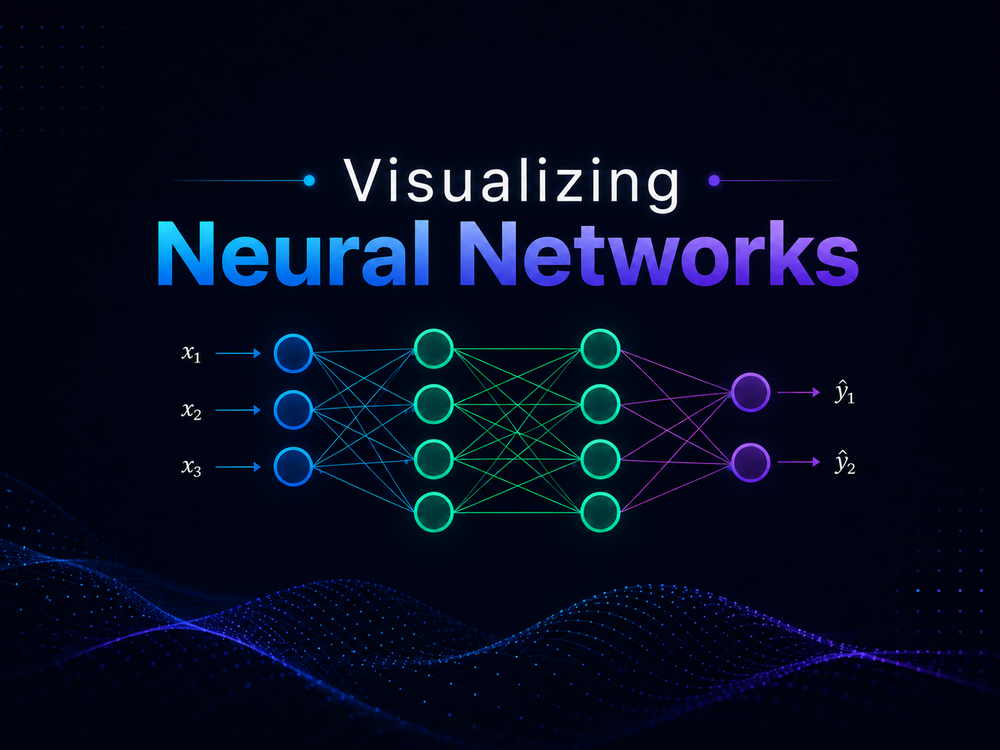

Workshop 2.4 · Neural Networks
Visualizing Neural Networks
This artifact presents a visual explanation of neural network components and how they work together to process data, make predictions, calculate error, and improve through training. The goal is to make neural networks easier to understand for both technical and nontechnical audiences.
Visual Artifact
The presentation explains the core parts of a neural network, including input layers, hidden layers, output layers, neurons, weights, biases, activation functions, loss functions, and optimization algorithms. It also shows how data moves forward through the network and how training improves model performance over time.

Description
This artifact explains how neural networks use connected layers of artificial neurons to identify patterns in data. Inputs move through the network, where weights and biases adjust the strength of connections between neurons. Activation functions help the model learn nonlinear patterns, while the output layer produces a prediction or classification.
The presentation also explains the training process. A loss function measures the difference between the model's prediction and the correct answer. An optimization algorithm then updates the model's weights to reduce the error. Through repeated training cycles, the neural network gradually improves its predictions.
Objective
The objective of this artifact is to demonstrate an understanding of the main components of neural networks and explain how those components work together during model training. The artifact focuses on making technical concepts visually clear, including data flow, prediction, error calculation, and optimization.
Process
I started by identifying the most important neural network concepts for a beginner-friendly explanation: layers, neurons, weights, biases, activation functions, loss functions, and optimization algorithms. I then organized those concepts into a visual sequence that follows how a neural network receives data, processes it, produces an output, and learns from error.
After organizing the content, I designed the artifact as a visual presentation with diagrams, flow elements, and concise explanations. This helped make the technical material more accessible while still showing the relationship between neural network structure and model training behavior.
Tools and Tech Used
- GitHub Pages
- HTML
- CSS
- JavaScript
- PowerPoint
- ChatGPT
- Neural Network Playground
- Neural network course materials
Value Proposition
This artifact makes neural networks easier to understand by breaking a complex AI concept into clear visual components. Instead of only defining terms, the presentation shows how those components connect and contribute to learning, prediction, and model improvement.
The unique value of this artifact is that it connects neural network theory with a visual explanation of the training process. It helps viewers understand that neural networks do not simply memorize answers; they learn patterns by adjusting weights, measuring error, and improving through repeated optimization.
Reflection
This assignment helped me better understand how neural networks learn from data. One of my biggest takeaways was that each component has a specific role. Layers organize the flow of information, neurons perform calculations, weights control connection strength, activation functions introduce flexibility, and loss functions measure how far the model is from the correct answer.
I also learned that optimization is central to neural network training. The model improves by repeatedly adjusting its weights to reduce loss. This helped me see neural networks not just as diagrams of connected nodes, but as learning systems that improve through feedback and iteration.
This artifact strengthened my ability to communicate technical AI concepts visually. It also connects well with my broader AI/ML portfolio because it builds on basic model comparison and prepares for deeper topics such as generative AI, large language models, and model training infrastructure.
References
TensorFlow. (n.d.). Neural network playground. https://playground.tensorflow.org/
IBM. (n.d.). What are neural networks? IBM. https://www.ibm.com/topics/neural-networks
Google Cloud. (n.d.). What is a neural network? Google Cloud. https://cloud.google.com/discover/what-is-a-neural-network
OpenAI. (2026). ChatGPT [Large language model]. https://chatgpt.com/